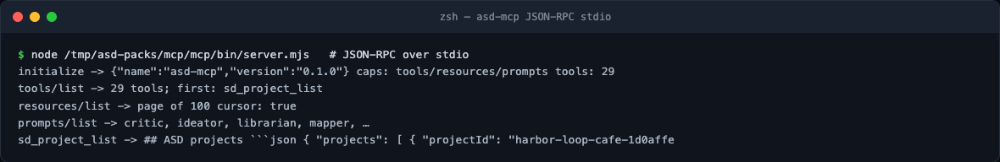

The MCP server on every host
The MCP surface is the same engine as the CLI, exposed over stdio JSON-RPC.
One self-contained bundle — mcp/bin/server.mjs plus the bundled knowledge
corpus — serves any MCP client.
Client configurations
Claude Code (project .mcp.json; the plugin wires this automatically):
{"mcpServers":{"asd":{"command":"node","args":["/absolute/path/to/mcp/bin/server.mjs"]}}}
Codex CLI / desktop (~/.codex/config.toml, shared by both):
[mcp_servers.asd]
command = "node"
args = ["/absolute/path/to/asd-mcp/mcp/bin/server.mjs"]
Kimi Code (mcp.json, project-level; approve Trust this folder):
{"mcpServers":{"asd":{"command":"node","args":["mcp/bin/server.mjs"]}}}
OpenCode: same shape in opencode.json. Anything else speaking stdio
MCP: point it at node …/server.mjs and prefer absolute paths — clients
choose their own working directory.
A live session

Five calls, real responses:
{"jsonrpc":"2.0","id":1,"method":"initialize",
"params":{"protocolVersion":"2025-06-18","capabilities":{},
"clientInfo":{"name":"course","version":"0"}}}
initialize -> {"name":"asd-mcp","version":"0.1.0"} caps: tools/resources/prompts tools: 29
tools/list -> 29 tools; first: sd_project_list
resources/list -> page of 100 cursor: true
prompts/list -> critic, ideator, librarian, mapper, …
sd_project_list -> ## ASD projects ```json { "projects": [ { "projectId": "harbor-loop-cafe-…
Details that matter:
- initialize advertises all three capabilities and a derived tool inventory (the count comes from the live registry, not a hardcoded number).
- resources/list is cursor-paginated at 100 per page — {{RESOURCES}}
corpus entries total (books, articles, templates, schemas). Pass the
returned
nextCursorback to continue. - prompts/list returns the ten role contracts;
prompts/getfetches one. - Tool names are
sd_*snake_case over MCP and kebab-case on the CLI (sd_project_create↔asd project-create). Same registry underneath.
Environment
| Variable | Purpose |
|---|---|
ASD_WORKSPACE |
project store root (default cwd → ~/.asd/projects) |
ASD_BOOKS_ROOT / ASD_ARTICLES_ROOT / ASD_AGENTS_ROOT |
override bundled corpus roots individually |
ASD_CORPUS_DATA_ROOT |
replace the whole bundled data directory |
With every corpus root pointed elsewhere the prompts list empties and resources reduce to the nine built-in metadata/template entries — tools stay intact. That is how you test a client against the server without the corpus.
Hands-on lab
Wire the server into two different clients on the same machine and run
sd_project_list through both against the same ASD_WORKSPACE. The project
list must match exactly — that is the portability guarantee of the on-disk
store doing its job.